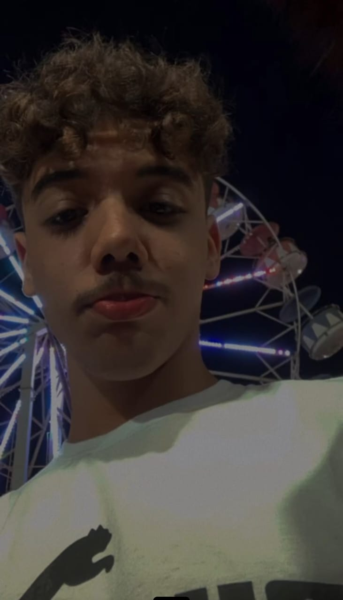

Luís Otávio Bordin Pereira

top 5 coisas que eu gosto de fazer
- ouvir musicas
- comer
- dormir
- irritar a Elisa
- rolezar com os cascas de bala pela cidade
meu ranking 5 series
- Elite
- gossip girl
- young royals
- black mirror
- stranger things
meus livros favs
- Lucíola (josé Alencar)
- O espelho (Machado Assis)
- Diario de um banana a saga completa
- O braço (Machado Assis)
- Heartstopper
minhas comidas favs
- carpaccio de salmão
- ceviche de salmão com tilapia
- baião de dois
- acarajé
- um podrão com bastante bacon e cheedar também é maravilhoso